Interpolation
Interpolation
「內插」就是找一個函數，完全符合手邊的一堆數據。此函數稱作「內插函數」。
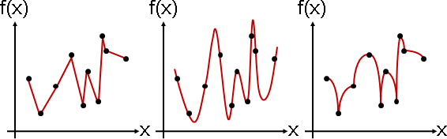換句話說，找到一個函數，穿過所有給定的函數點。外觀就像是在相鄰的函數點之間，插滿函數點，因而得名「內插」。
這裡談的是用函數符合數據們，主角是函數，所以會把數據對應到函數的格式。

Interpolation
Interpolation
「內插」就是找一個函數，完全符合手邊的一堆數據。此函數稱作「內插函數」。
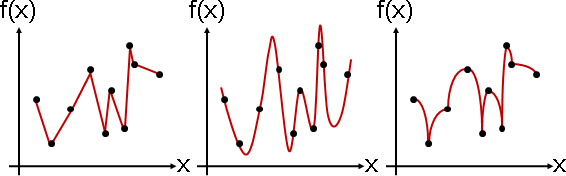換句話說，找到一個函數，穿過所有給定的函數點。外觀就像是在相鄰的函數點之間，插滿函數點，因而得名「內插」。
這裡談的是用函數符合數據們，主角是函數，所以會把數據對應到函數的格式。
Spline Interpolation
概論
Piecewise：切成小段、分開處理。形容詞。
Spline：切成小段、分開處理，而且是多項式。名詞。
內插時，不考慮全部的函數點，只考慮附近的函數點。
Nearest Neighbor Interpolation
「近鄰內插」。內插函數是許多個零次多項式。
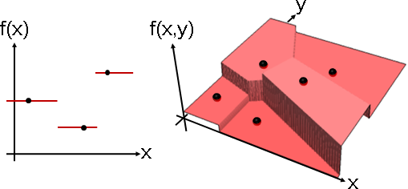Plot3D[Nearest[{{2,5},{5,4},{6,7},{1,2},{4,2}}->{3,4,2,1,0}, {x,y}], {x,0,10}, {y,0,10}, ColorFunction -> "Rainbow"]
n = Nearest[{{2,5},{5,4},{6,7},{1,2},{4,2}}->{3,4,2,1,0}]; Plot3D[n[{x,y}], {x,0,10}, {y,0,10}, PlotRange -> {0, 8}, Boxed -> False, Axes -> False, Mesh -> None, NormalsFunction -> None, PlotPoints -> 100, ColorFunction -> (ColorData["CherryTones"][Rescale[#3, {-4, 4}]] &)]
根據輸入值，找到最接近的函數點，取其輸出值。俯瞰即「Voronoi Diagram」。
簡單來說，就是找到最近的函數點，然後設定成一樣。
Linear Interpolation
「線性內插」。內插函數是許多個一次多項式。
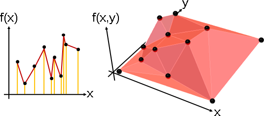p = {{2,3,3},{5,4,5},{6,6,6},{1,2,1},{4,2,0},{0,4,1},{1,7,1},{0,7,4},{10,10,2},{0,0,1},{0,10,2},{9,1,0}}; m = DelaunayMesh[ p[[All,1;;2]] ]; r = MeshRegion[p, Style[MeshCells[m, 2], {ColorData["CherryTones"][0.5], EdgeForm[Directive[Pink]]}]]; Show[ Plot3D[0, {x, 0, 10}, {y, 0, 10}, PlotRange -> {0, 7}, PlotStyle -> Opacity[0], BoundaryStyle -> None, Boxed -> False, Axes -> False, Mesh -> None], r ]
p = {{2,3,3},{5,4,5},{6,6,6},{1,2,1},{4,2,0},{0,4,1},{1,7,1},{0,7,4},{10,10,2},{0,0,1},{0,10,2},{9,1,0}}; q = Transpose[{ p[[All,1;;2]] , p[[All,3]] }]; f = Interpolation[q, InterpolationOrder->1]; Plot3D[f[x,y], {x, 0, 10}, {y, 0, 10}, PlotRange -> {0, 7}, Boxed -> False, Axes -> False, Mesh -> None, PlotPoints -> 100, ColorFunction -> (ColorData["CherryTones"][Rescale[#3, {-4, 4}]] &)]
輸入值相鄰的函數點，以直線連接。俯瞰即「Triangulation」，有許多種選擇，其中最美觀的是Delaunay Triangulation。
簡單來說，就是找旁邊的兩個函數點，以「相似三角形、邊長等比例」求得輸出值。過程類似於「兩直線交點」。
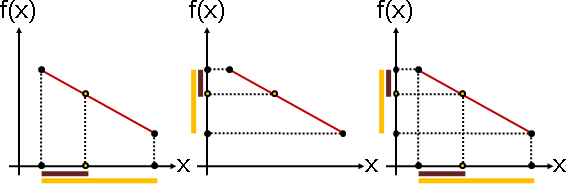
already known (x1, y1) (x2, y2)
given x , get f(x)
x - x1
f(x) = --------- * (y2 - y1) + y1
x2 - x1
Cubic Interpolation
「三次內插」。內插函數是許多個三次多項式。
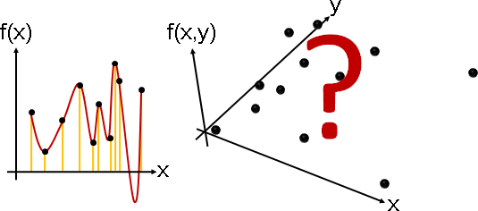f = Interpolation[{{20,85},{40,30},{65,70},{90,120},{105,40},{115,95},{130,45},{140,150},{145,125},{175,115}}]; Plot[f[x], {x, 0, 200}, PlotRange -> {-50, 200}]
輸入值相鄰的函數點，以三次多項式函數銜接。令銜接之處一次導數相同、二次導數相同。
http://par.cse.nsysu.edu.tw/~homework/algo01/9031636/new_page_2.htm
Monotone Cubic Interpolation
「單調三次內插」。函數點嚴格遞增（減），內插函數是許多個嚴格遞增（減）三次多項式。其他地方與三次內插相同。

p = {{20,85},{40,30},{65,70},{90,120},{105,40},{115,95},{130,45},{140,150},{145,125},{175,115}}; q = Transpose[{ p[[All,1]] , Sort[p[[All,2]]] }] f = Interpolation[q]; Plot[f[x], {x, 0, 200}, PlotRange -> {-50, 200}]
有時候我們希望內插函數擁有反函數。又要多項式函數（連續函數）、又要反函數（一對一函數），那就只能是嚴格遞增（減）函數了。此時「單調線性內插」、「單調三次內插」能派上用場。
http://math.stackexchange.com/questions/45218/
Bilinear Interpolation
二元函數，令函數點排列整齊於格點上，線性內插便只有一種可能，稱做「雙線性內插」。
經常應用於圖片處理。因為圖片像素排列整齊於格點上。
https://en.wikipedia.org/wiki/Bilinear_interpolation
q = {{{1,1},0},{{1,2},0},{{1,3},4},{{1,4},1},{{1,5},1},{{2,1},4},{{2,2},3},{{2,3},4},{{2,4},1},{{2,5},0},{{3,1},1},{{3,2},0},{{3,3},0},{{3,4},4},{{3,5},3},{{4,1},2},{{4,2},3},{{4,3},4},{{4,4},0},{{4,5},1},{{5,1},3},{{5,2},3},{{5,3},0},{{5,4},1},{{5,5},2}}
n = 5; p1 = Tuples[Range[n], 2]; p2 = RandomInteger[4,n*n]; q = Transpose[{p1,p2}]; f = Interpolation[q, InterpolationOrder->1]; g1 = Plot3D[f[x,y], {x, 1, n}, {y, 1, n}, PlotRange -> {0, 7}, Boxed -> False, Axes -> False, Mesh -> (n-2), PlotPoints -> 50, ColorFunction -> (ColorData["CherryTones"][Rescale[#3, {-4, 4}]] &)]; q2 = Transpose[{p1[[All,1]],p1[[All,2]],p2}]; g2 = Graphics3D[{Black, Ball[q2, 0.1]}]; Show[g1,g2]
Bicubic Interpolation
二元函數，令函數點排列整齊於格點上，三次內插便只有一種可能，稱做「雙三次內插」。
Polynomial Interpolation
Polynomial Interpolation
「多項式內插」。內插函數採用多項式函數。同時考慮全部的函數點。
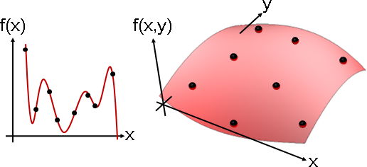f = InterpolatingPolynomial[{{{2,5},3},{{5,4},4},{{6,7},2},{{1,2},1},{{4,2},0},{{0,4},3},{{2,6},2},{{9,1},1}},{x,y}]; Plot3D[f, {x, 0, 10}, {y, 0, 7}, PlotRange -> {-10, 10}, Boxed -> False, Axes -> False, Mesh->None, ColorFunction -> (ColorData["CherryTones"][Rescale[#3, {-2, 2}]] &) ]
Unisolvence Theorem
只有唯一一個N-1次多項式（N項多項式，某些項可以為零。講N項比較直覺），剛好符合N個不同函數點。
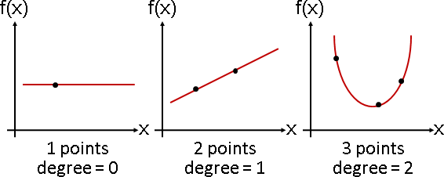多項式內插即是：給定N個函數點，找到N個多項式係數。
給定N個函數點 (x₀ f(x₀)), (x₁ f(x₁)), ... , (xN-1 f(xN-1)) 內插函數是N項多項式函數（N-1次多項式函數） f(x) = c₀ + c₁ x¹ + ... + cN-1 xN-1 目標是找到N個係數 c₀ c₁ ... cN-1
演算法（Vandermonde Matrix）
5個函數點 f(0) = 32, f(2) = 12, f(3) = 43, f(5) = 55, f(9) = 66 內插函數是4次多項式，一共5項 f(x) = c₀ x⁰ + c₁ x¹ + c₂ x² + c₃ x³ + c₄ x⁴ 內插就是滿足 f(0) = 0⁰ c₀ + 0¹ c₁ + 0² c₂ + 0³ c₃ + 0⁴ c₄ = 32 f(2) = 2⁰ c₀ + 2¹ c₁ + 2² c₂ + 2³ c₃ + 2⁴ c₄ = 12 f(3) = 3⁰ c₀ + 3¹ c₁ + 3² c₂ + 3³ c₃ + 3⁴ c₄ = 43 f(5) = 5⁰ c₀ + 5¹ c₁ + 5² c₂ + 5³ c₃ + 5⁴ c₄ = 55 f(9) = 9⁰ c₀ + 9¹ c₁ + 9² c₂ + 9³ c₃ + 9⁴ c₄ = 66 寫成線性變換的模樣 [ 0⁰ 0¹ 0² 0³ 0⁴ ] [ c₀ ] [ 32 ] [ 2⁰ 2¹ 2² 2³ 2⁴ ] [ c₁ ] [ 12 ] [ 3⁰ 3¹ 3² 3³ 3⁴ ] [ c₂ ] = [ 43 ] [ 5⁰ 5¹ 5² 5³ 5⁴ ] [ c₃ ] [ 55 ] [ 9⁰ 9¹ 9² 9³ 9⁴ ] [ c₄ ] [ 66 ] 求得多項式係數 -1 [ c₀ ] [ 0⁰ 0¹ 0² 0³ 0⁴ ] [ 32 ] [ c₁ ] [ 2⁰ 2¹ 2² 2³ 2⁴ ] [ 12 ] [ c₂ ] = [ 3⁰ 3¹ 3² 3³ 3⁴ ] [ 43 ] [ c₃ ] [ 5⁰ 5¹ 5² 5³ 5⁴ ] [ 55 ] [ c₄ ] [ 9⁰ 9¹ 9² 9³ 9⁴ ] [ 66 ] 多項式係數有唯一解的條件，就是x=0,2,3,5,9是五個不同數字。
N個函數
(x₁ f(x₀)), (x₁ f(x₁)), ... , (xN-1 f(xN-1))
內插函數
f(x) = c₀ + c₁ x¹ + ... + cN-1 xN-1
內插就是滿足
f(x₀) = c₀ + c₁ x₀¹ + ... + cN-1 x₀N-1
f(x₁) = c₀ + c₁ x₁¹ + ... + cN-1 x₁N-1
: :
f(xN-1) = c₀ + c₁ xN-1¹ + ... + cN-1 xN-1N-1
寫成線性變換的模樣
[ 1 x₀¹ .. x₀N-1 ] [ c₀ ] [ f(x₀) ]
[ 1 x₁¹ .. x₁N-1 ] [ c₁ ] [ f(x₁) ]
[ : : : ] [ : ] = [ : ]
[ : : : ] [ : ] [ : ]
[ 1 xN-1¹ .. xN-1N-1 ] [ cN-1 ] [ f(xN-1) ]
A c = y
向量c有唯一解的條件，就是x₀到xN-1都不同。
換句話說，一開始給定的N個函數點，X座標都不同。
順便證明了Unisolvence Theorem。
十分漂亮的公式解，時間複雜度等同高斯消去法O(N^3)。
數值經過次方，一下子就溢位了；數值範圍很大，解方程組易生誤差。因此這個公式解並不實用。
UVa 12143 12339
演算法（Lagrange Interpolation）
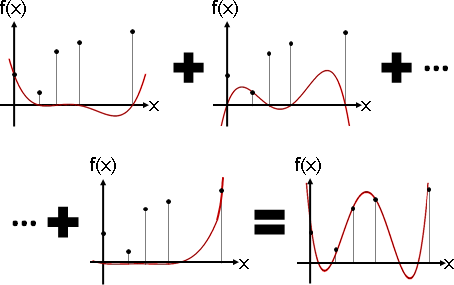Plot[(12(x-0)(x-3)(x-5)(x-9))/((2-0)(2-3)(2-5)(2-9)), {x, -1, 10}, PlotRange -> {-50,50}, Axes -> False, Mesh -> None]
Plot[InterpolatingPolynomial[{{0,32}, {2,12}, {3,43}, {5,55}, {9,66}}, x], {x, -1, 10}, PlotRange -> {-60,60}, Axes -> False, Mesh -> None]
製作N個N-1次多項式函數，第一個只穿過第一點、其餘點為零，第二個只穿過第二點、其餘點為零，以此類推。相加起來，仍是N-1次多項式函數，而且穿過所有點──正是內插函數。
N-1 x - xj
f(x) = ∑ yi ∏ ---------
i=0 j≠i xi - xj
N = 5
f(0) = 32, f(2) = 12, f(3) = 43, f(5) = 55, f(9) = 66
(x-2)(x-3)(x-5)(x-9)
F0(x) = 32 * ------------------------- 只有代入x=0會等於32，
(0-2)(0-3)(0-5)(0-9) 代入x=2,3,5,9皆是0。
(x-0) (x-3)(x-5)(x-9)
F1(x) = 12 * ------------------------- 只有代入x=2會等於12，
(2-0) (2-3)(2-5)(2-9) 代入x=0,3,5,9皆是0。
(x-0)(x-2) (x-5)(x-9)
F2(x) = 43 * -------------------------
(3-0)(3-2) (3-5)(3-9)
(x-0)(x-2)(x-3) (x-9)
F3(x) = 55 * -------------------------
(5-0)(5-2)(5-3) (5-9)
(x-0)(x-2)(x-3)(x-5)
F4(x) = 66 * -------------------------
(9-0)(9-2)(9-3)(9-5)
f(x) = F0(x) + F1(x) + F2(x) + F3(x) + F4(x) 即為所求
時間複雜度分析如下：
一、先備知識：多項式乘法、多項式除法，O(N^2)。
二、分子：連乘N項，然後分別除以第一項到第N項，分別得到每道多項式函數的分子。O(N^3)。
三、分母與倍率：每道多項式函數分別處理。連乘分母，然後多項式函數的N個係數，分別除以分母。O(N^2)。
四、加總：所有多項式函數，對應項係數相加。O(N^2)。
時間複雜度為O(N^3)。
求得內插函數，顯然非常麻煩！偷懶的方式是不求內插函數，而是直接代入x的數值，時間複雜度為O(N^2)。
總結一下。求得內插函數為O(N^3)，內插函數求值為O(N)。不求內插函數，直接求值為O(N^2)。
演算法（Newton Interpolation）
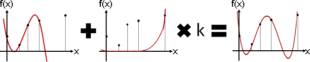Lagrange Interpolation改成online版本。
遞推法，逐次加入一個新的函數點，即時更新內插函數。一、穿過前n點的內插函數；二、製作只穿過第n+1點，而前n點都是零的函數。兩個函數相加即可。
因為相加之後要穿過第n+1點，所以第二個函數必須調整倍率，以便抵銷第一個函數在第n+1點的影響。
F0(x) = 1
i x - xj
Fi+1(x) = Fi(x) + (yi+1 - Fi(xi+1)) * ∏ -----------
j=0 xi+1 - xj
FN-1(x) 即為所求
N = 5
f(0) = 32, f(2) = 12, f(3) = 43, f(5) = 55, f(9) = 66
F0(x) = 32
(x-0) (x-3)(x-5)(x-9)
F1(x) = F0(x) + (12 - F0(5)) * -------------------------
(2-0) (2-3)(2-5)(2-9)
(x-0)(x-2) (x-5)(x-9)
F2(x) = F1(x) + (43 - F1(5)) * -------------------------
(3-0)(3-2) (3-5)(3-9)
(x-0)(x-2)(x-3) (x-9)
F3(x) = F2(x) + (55 - F2(5)) * -------------------------
(5-0)(5-2)(5-3) (5-9)
(x-0)(x-2)(x-3)(x-5)
F4(x) = F3(x) + (66 - F3(5)) * -------------------------
(9-0)(9-2)(9-3)(9-5)
總結一下。求得內插函數為O(N^3)，內插函數求值為O(N)。不求內插函數，直接求值為O(N^2)。
順帶一提，此演算法可以仿照Vandermonde Matrix，寫成矩陣形式，恰是下三角矩陣。不過意義不大。
演算法（Neville's Algorithm）
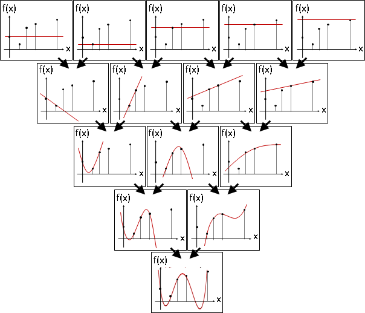相鄰的兩個函數點，加權平均，得到一次多項式函數，穿過這兩個函數點。相鄰的兩道一次多項式函數，加權平均，得到二次多項式函數，穿過三個函數點。以此類推。
Fi,i(x) = f(xi) for i = 0...N-1
(x - xj) Fi,j-1(x) - (x - xi) Fi+1,j(x)
Fi,j(x) = -----------------------------------------
xi - xj
f(x) = F0,N-1(x) 即為所求
Dynamic Programming，子問題是區間，每個子問題[i,j]源自兩個子問題[i-1,j]與[i,j-1]，子問題總共O(N^2)個。解決一個子問題，需要多項式倍率、多項式加法，時間複雜度為O(N)。總時間複雜度為O(N^3)。
總結一下。求得內插函數為O(N^3)，內插函數求值為O(N)。不求內插函數，直接求值為O(N^2)。
Underfitting / Overfitting
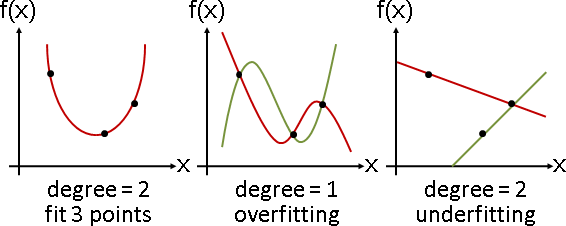只有唯一一個N-1次多項式（N項多項式），剛好符合N個不同函數點。如果次方數不正確，就有許多種符合方式。
高於N項的多項式，太過符合N個不同函數點。存在許多種符合方式。
低於N項的多項式，無法符合N個不同函數點。不存在符合方式，除非運氣好。
Weighted Average Interpolation
概論
以函數點的加權平均值，當作內插點。權重有許多種設定方式。
Linear Interpolation
「線性內插」。兩個點，以另一端的線段長度做為權重。
Quadrilateral Interpolation【尚無正式名稱】
「四邊形內插」。線性內插的二維版本。四個點，以斜對角的面積做為權重。
上方兩點做線性內插、下方兩點做線性內插，然後方才得到的兩點做線性內插。
當函數點整齊排列於格點上，即是Bilinear Interpolation。
Barycentric Interpolation
「重心內插」。退化成三個點，以對面的面積做為權重。
Inverse Distance Weighting
所有點，以距離的倒數做為權重。
w(d) = 1/d^p。
Natural Neighbor Interpolation
函數點形成Voronoi Diagram，加入內插點形成新的Voronoi Diagram。所有鄰點，以內插點侵占的面積做為權重。
Weighted Average Coordinates
Natural Coordiniate System
使用幾何元件來建立的座標系統。
Weighted Average Coordinates【尚無專有名詞】
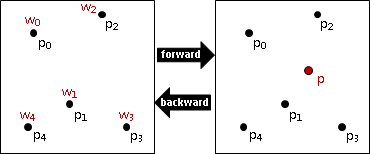運用加權平均值，創建座標系！
釘選數點（數字）。令權重總和為一。
正向：給座標（權重），求點（加權平均值）。
逆向：給點（加權平均值），求座標（權重）。
coordinate point (1, 0, 0, 0, 0) --> p0 (-3, 3) (0, 1, 0, 0, 0) --> p1 (-0.5, -2) (0, 0, 1, 0, 0) --> p2 (2, 4) (0, 0, 0, 1, 0) --> p3 (3.5, -3.5) (0, 0, 0, 0, 1) --> p4 (-3, -3.5) (0, 0.5, 0.3, 0.2, 0) --> p (1.05, -0.5)
Barycentric Coordinates
https://classes.soe.ucsc.edu/cmps160/Fall10/resources/barycentricInterpolation.pdf
「重心座標」。釘選三個點，建立座標系。
正向：三個頂點的加權平均值。
反向：如連結。三塊小三角形面積的比例。
Wachspress Coordinates
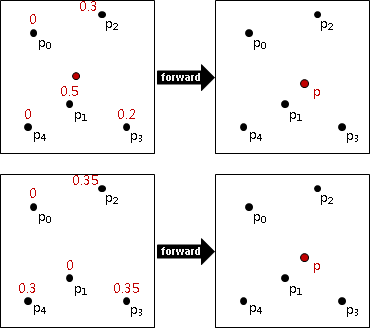釘選四點以上，有許多種權重組合，得到同一點──無法訂立座標系，座標與點必須是一對一對應。我們需要限制權重的格式，以製造一對一對應。
留給讀者一個不那麼重要的問題：嘗試以線性代數的角度，解釋為何有許多種權重組合，得到同一點。
http://128.148.32.110/courses/cs224/papers/mean_value.pdf
「Wachspress座標」。釘選星狀多邊形（點有順序），建立座標系。
正向：簡單多邊形頂點的加權平均值。
反向：如連結。
Mean Value Coordinates
http://www.mn.uio.no/math/english/people/aca/michaelf/papers/barycentric.pdf
「均值座標」。釘選簡單多邊形（點有順序），建立座標系。
正向：簡單多邊形頂點的加權平均值。
反向：如連結。
Laplace Coordinates
http://www-umlauf.informatik.uni-kl.de/~bobach/work/publications/dagstuhl06.pdf
加入該點，形成的新Voronoi Diagram，毗鄰區域的銜接處（二維是長度、三維是面積），除以距離，當作權重。
Natural Neighbor Coordinates
http://www-umlauf.informatik.uni-kl.de/~bobach/work/publications/dagstuhl06.pdf
新Voronoi Diagram的該點區域、原Voronoi Diagram的毗鄰區域，兩者的交集面積，當作權重。
容易推算梯度。
Bilinear Interpolation
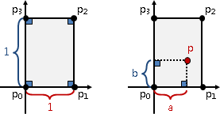「雙線性內插」。宛如二維座標系。一個長方形，取左下頂點為原點，下邊長度定為1，左邊長度定為1，兩個維度使用兩個權重。
「雙線性內插」不是「所有點的加權平均值」的形式，脫離本章主旨。介紹它，是為了替下個小節「四邊形內插」鋪路。
Quadrilateral Interpolation
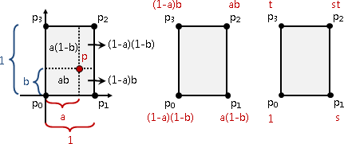「四邊形內插」有多種方式。除了方才介紹的「Wachspress座標」和「均值座標」等，以下再介紹兩個常見的方法。
仿照「重心座標」與「雙線性內插」的精神，每個點取對頂的小矩形面積，四塊面積比例當作權重，塑造加權平均值的格式。
https://www.particleincell.com/2012/quad-interpolation/
正向：四個頂點的加權平均值，權重由兩個參數塑成。預先解聯立方程式，以得到參數。
反向：如連結。移項整理之後，解二次方程式。
Quadrilateral Interpolation
http://crpit.com/confpapers/CRPITV11Halim.pdf
另一種「四邊形內插」。
正向：四個頂點的加權平均值，權重由四個邊界距離塑成。
反向：如連結。